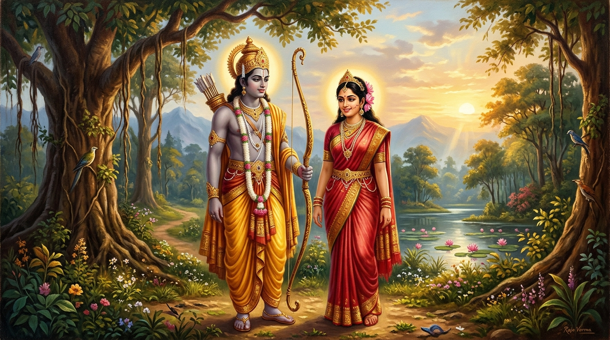
RAMAYANA — THE PATH OF DHARMA
Traditionally attributed to Maharishi Valmiki, the Adi Kavi (First Poet), the Ramayana is the foundational epic of Bharat. It follows the life of Lord Rama — an embodiment of truth, moral excellence, and selfless duty — illuminating humanity's journey toward cosmic righteousness.
The Living Tradition: While rooted in the Sanskrit original of Maharishi Valmiki, the Ramayana lives across India through beloved regional literary retellings including Goswami Tulsidas’s Ramcharitmanas in Awadhi, Kamban’s Kamba Ramayanam in Tamil, Krittibas Ojha’s Bengali retelling, Ezhuthachan’s Malayalam Adhyathma Ramayanam, and Ranganatha’s Telugu epic.
THE SEVEN KANDAS OF RAMAYANA
Travel step-by-step through the seven monumental books of the epic, from the divine childhood in Ayodhya to the eternal dawn of Ramrajya.
IMPORTANT CHARACTERS OF RAMAYANA
Meet the divine, heroic, and tragic figures whose choices illuminate the infinite shades of duty, devotion, and destiny.
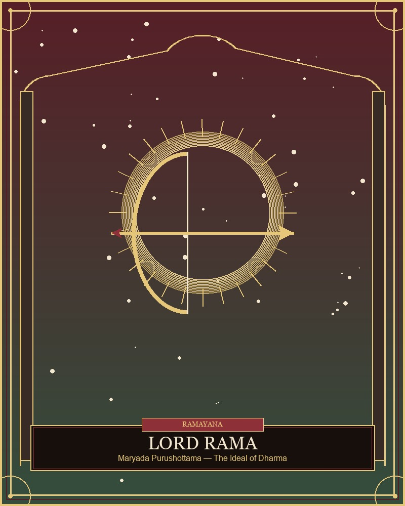
Maryada PurushottamaLord Rama
Seventh Avatara of Lord Vishnu • Supreme Ideal of Dharma
The eldest son of King Dasharatha and Queen Kaushalya, Rama represents the peak of human virtue, absolute adherence to truth, and selfless service to all beings.
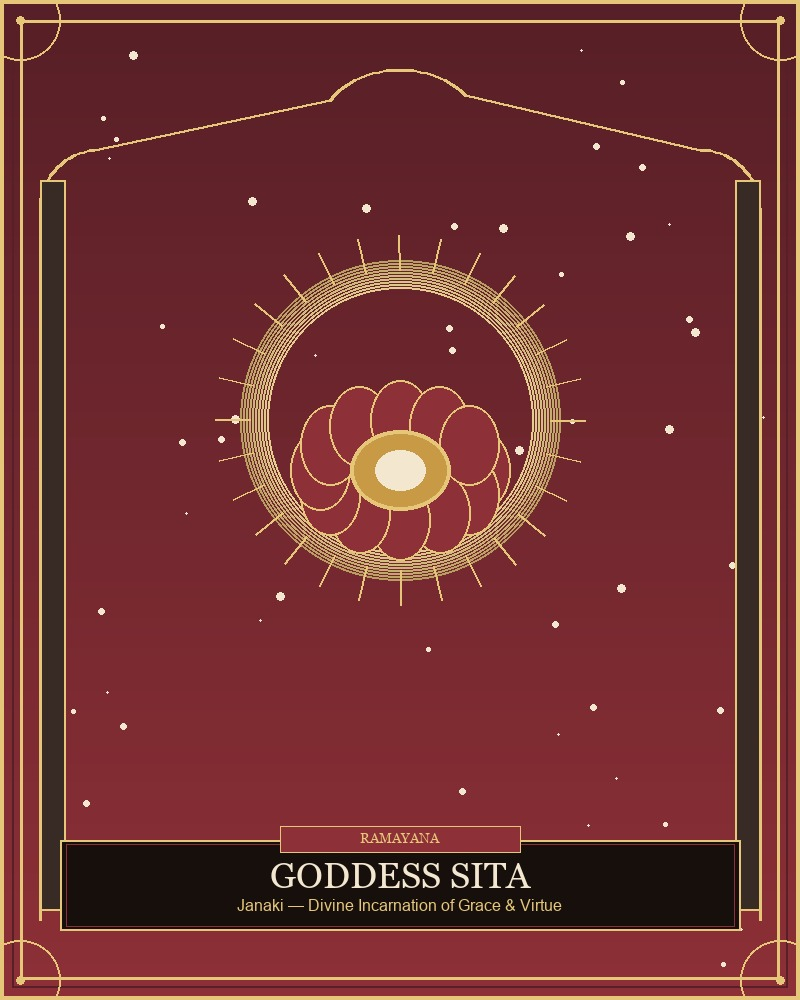
JanakiGoddess Sita
Incarnation of Goddess Lakshmi • Paragon of Fortitude
Daughter of the earth found by King Janaka, Sita personifies divine purity, fearless loyalty, and moral sovereignty amidst the deepest trials of exile and captivity.
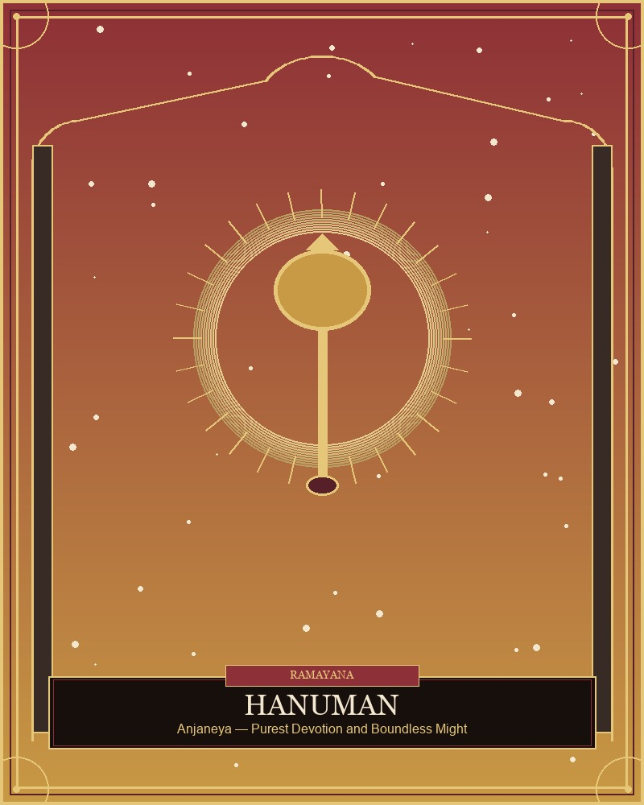
MahaviraHanuman
Rudra Avatara • Purest Devotion & Boundless Strength
The son of Vayu and Anjana, Hanuman leaped across the southern ocean, burnt golden Lanka, carried Mount Dronagiri, and remains the eternal protector of all who chant Rama's name.
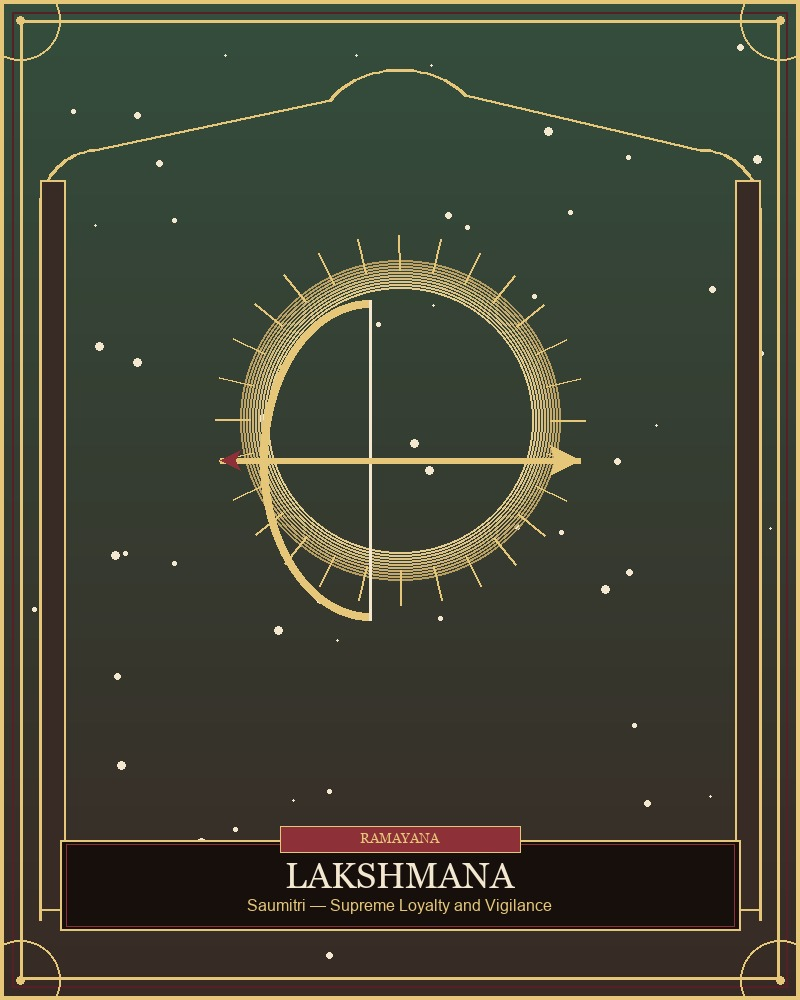
SaumitriLakshmana
Incarnation of Sheshanaga • The Vigilant Brother
Renouncing sleep and comfort for fourteen years to stand guard in the wilderness, Lakshmana felled Indrajit through his unbroken celibacy and righteous vows.
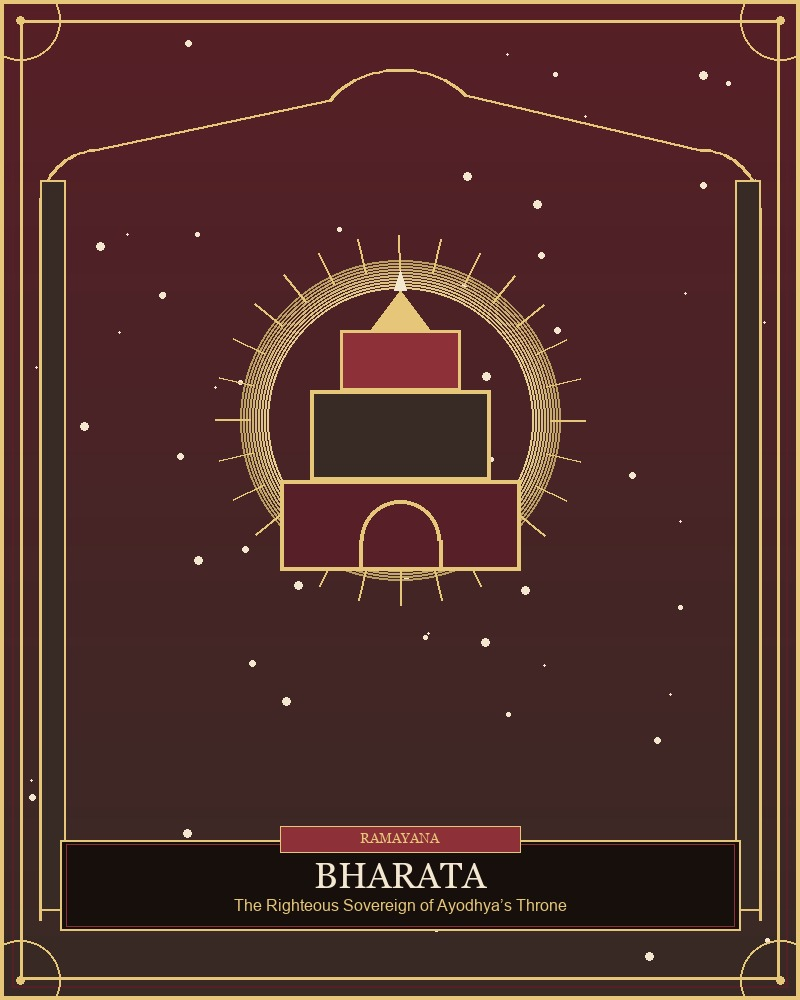
AyodhyaBharata
Righteous Sovereign of Rama's Padukas
Refusing the crown granted to him by Kaikeyi's boons, Bharata governed Ayodhya as an ascetic regent with Rama's sacred wooden sandals upon the royal throne.
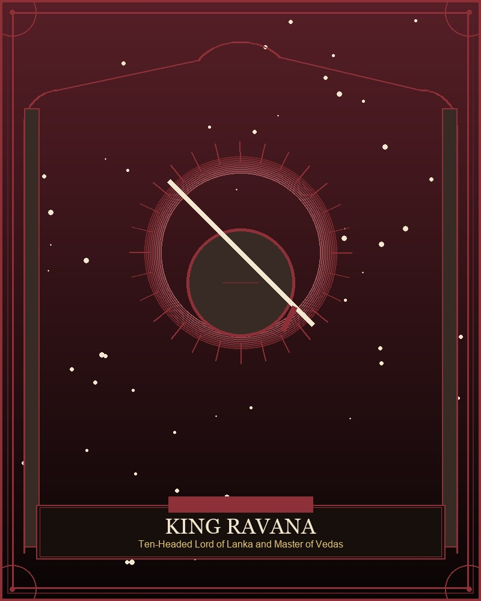
LankeshwaraKing Ravana
Ten-Headed Lord of Lanka • Scholar & Devotee of Shiva
A master of the four Vedas and composer of the Shiva Tandava Stotram whose unbridled ego and lust caused the complete ruin of his golden civilization.
THE LEGENDARY EVENTS
Iconic milestones of the Ramayana captured in vivid storytelling and traditional visual art.
THE SACRED REALMS OF RAMAYANA
Follow the traditional geographic journey from the banks of the Sarayu to the southern shore of Lanka.
Ayodhya (Kosala)
The glorious capital on the sacred Sarayu River where Lord Rama took birth, lived his youthful years, and returned for his immortal coronation.
Mithila (Videha)
The realm of King Janaka where Rama lifted Lord Shiva’s Pinaka bow, uniting Ayodhya and Videha in eternal spiritual matrimony.
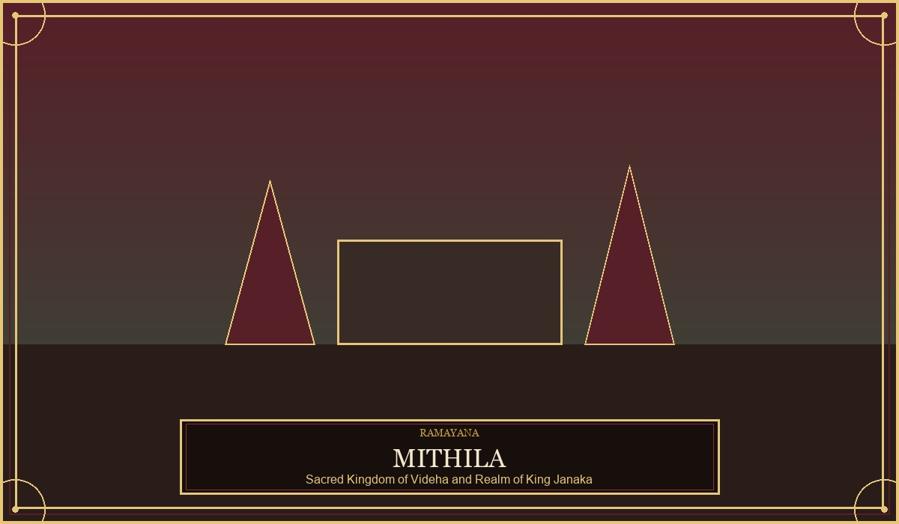
Chitrakoot
The serene forested hills along the Mandakini River where Rama, Sita, and Lakshmana lived in simple hermitage, and where Bharata received Rama's Padukas.
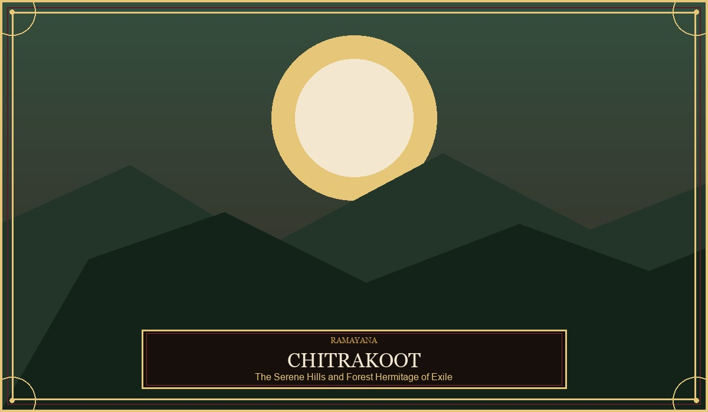
Dandakaranya & Panchavati
The vast forest along the Godavari River where the divine trio spent a decade protecting sages, and where the golden deer Maricha lured Rama away.
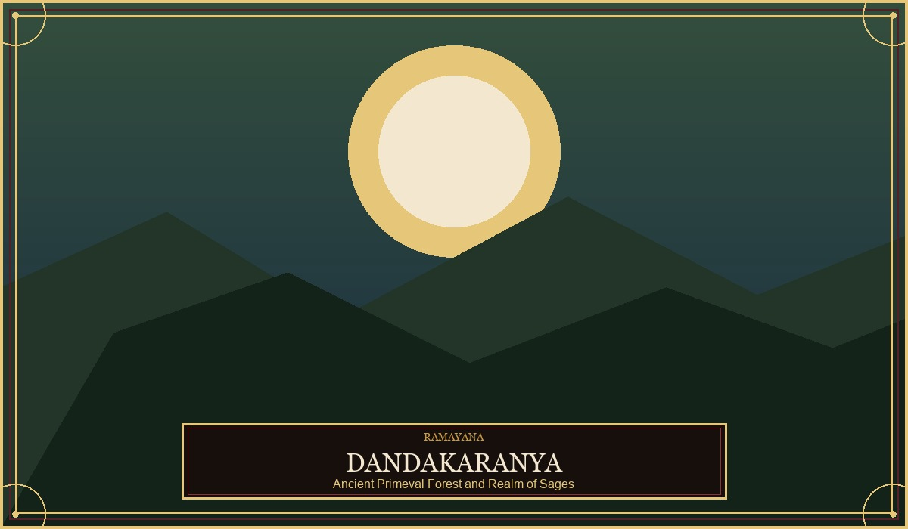
Kishkindha
The rugged rocky kingdom along the Tungabhadra River where Rama formed an unbreakable pact of friendship with Sugriva and Hanuman.
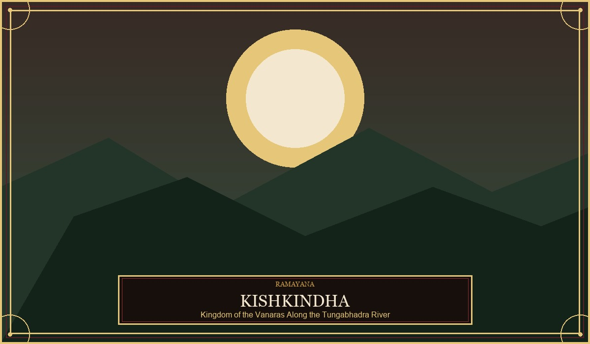
Rameswaram & Rama Setu
The southern shore where Rama consecrated the Shiva Linga and the Vanaras constructed the floating stone causeway across the ocean.
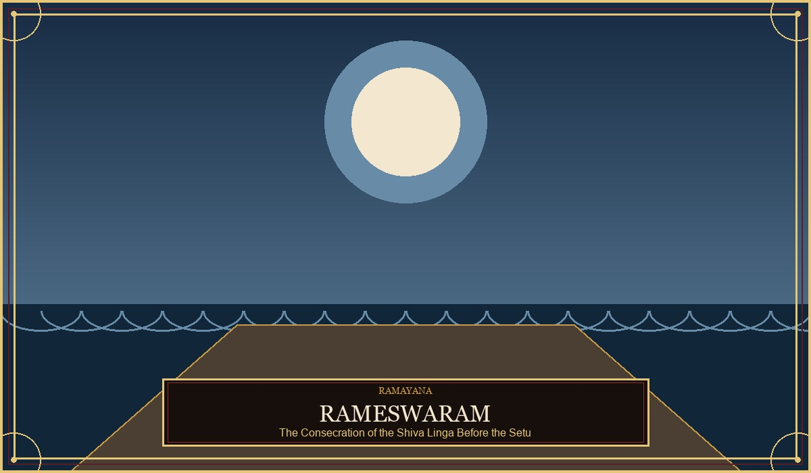
Lanka (Trikuta Mountain)
The golden island fortress of Ravana, site of the great war, and the liberation of Goddess Sita under the banner of Dharma.
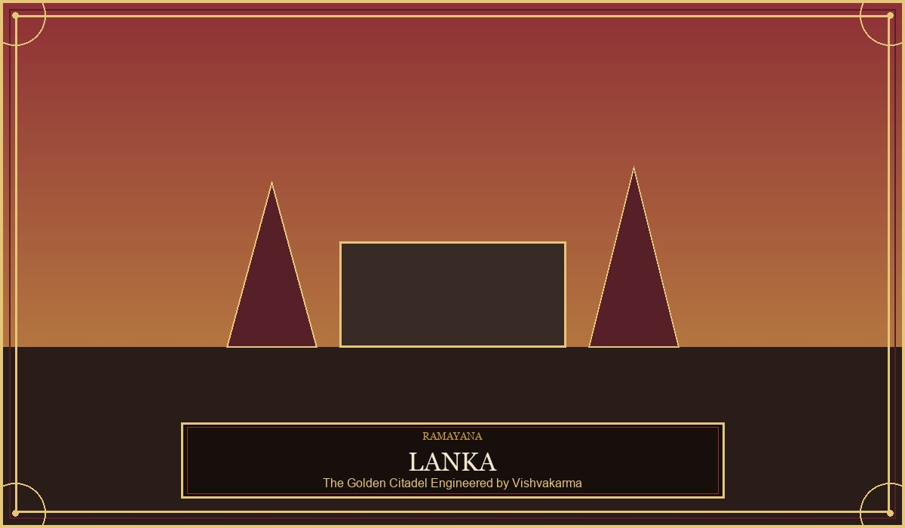